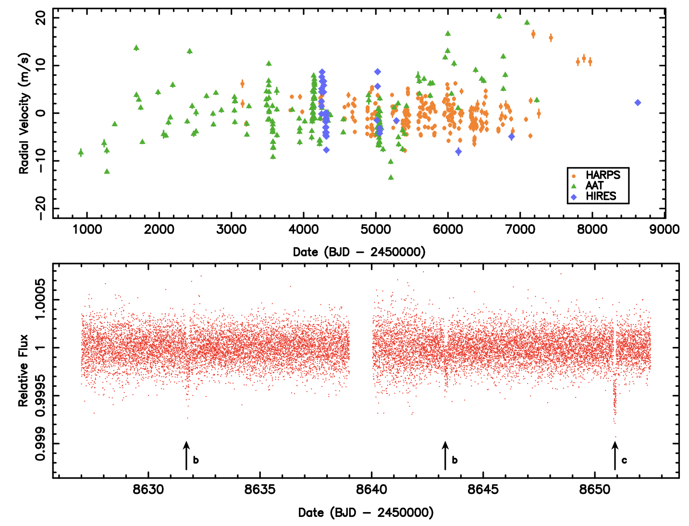
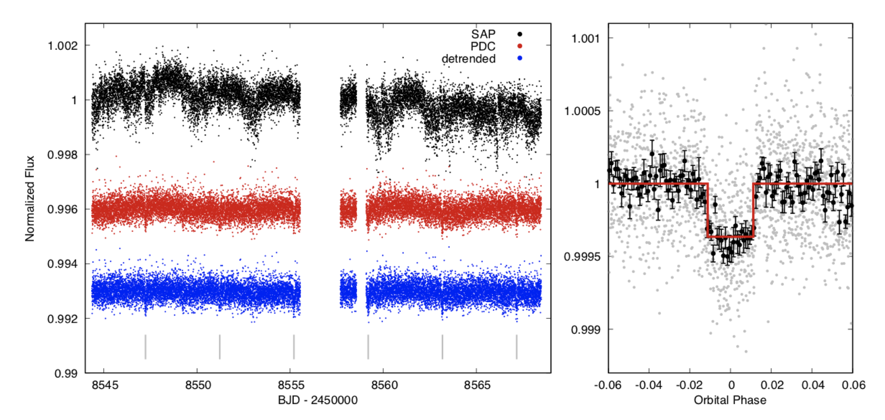

Welcome TESS followers to our weekly news bulletin! This week we report on three new papers from the archive, in addition to a new and interesting website that will aid in TESS observations.
This week a new website was launched by the Space Telescope Science Institute (STScI), for the UV Legacy Library of Young Stars as Essential Standards (ULLYSES). This is a program in which the Hubble Space Telescope (HST) will devote ~1000 orbits to the production of a UV spectroscopic library of young high- and low- mass stars in the local universe. It is a Directors Discretionary program which is now live. In particular, the ULLYSES website contains the program ID and scheduling information for targets already observed or in the long-range plan; currently this includes stars in the Large and Small Magellanic Clouds, and the Orion T Tauri stars scheduled to be observed in November-December 2020 to coincide with TESS observations. The ULLYSES website will continue to be updated with additional program and scheduling information as it becomes available.
Now onto our three archive papers!
Transits of Known Planets Orbiting a Naked-Eye Star (Kane et. al., 2020): TESS data is used in combination with observations by HARPS, Keck/HIRES and the AAT, in order to perform a complete analysis of the HD 136352 system parameters. HD 136352 is a naked eye G-type main sequence star that is host to three planets with orbital periods of 11.6, 27.6, and 108.1 days. This paper focuses on the detection and characterization of traits for the two inner planets. Radii of 1.48 R⊕, and 2.608 R⊕ for planets b and c, respectively were derived. From the combined data analysis, bulk density values of ρb = 7.8~gcm-3 and ρc 3.5~gcm-3 for planets b and c were extracted, placing them on either side of the radius valley.
The Evolution of Rotation and Magnetic Activity in 94 Aqr Aa from Asteroseismology with TESS (Metcalfe et. al., 2020): The authors have used 27 days of photometry from TESS to characterize solar-like oscillations in the G8 subgiant of the 94 Aqr triple system. Using the stellar properties derived in combined with 35 years of data from the Mount Wilson HK project, the authors were able to probe the evolution of rotation and magnetic activity in the system. The asteroseismic age of the subgiant agrees with the isochrone derived age, but the rotation period is much shorter. Hypothesizes are presented by the authors to explain the stellar properties determined.
TESS Reveals a Short-period Sub-Neptune Sibling (HD 86226c) to a Known Long-period Giant Planet (Teske et al., 2020): The authors present the discovery of a small, short period (~ 4 days) transiting planet around the bright (V=7.9) star HD 86226. This solar-like star was known to already host a long-period (~1600 day) giant planet. The newly detected planet is named HD 86226c, has a radius of 2.16 R⊕ and mass of 7.26 M⊕, based on new and archival measurements. The authors also update the parameters of the additional planet in the system which is not known to transit. This planet is less eccentric and less massive than previously thought. HD 86226c is near both the ''radius gap'' and the ''hot Neptune desert'', which makes it an interesting candidate for transmission spectroscopy to further refine its composition.

Fig 1: Taken from Kane et. al., (2020). The data sources used within the papers analysis of the system. Top panel is the combined rV data spanning a period of 21 years, acquired using the HARPS (orange circles), AAT/UCLES (green triangles), and Keck/HIRES (blue diamonds) instruments. Bottom panel indicates the TESS sector 12 photometry. The vertical arrows indicate the location of two transits for planet b and single transit for planet c.

Fig 2: TESS lightcurve of HD 86226c and the transit detection. In the left panel the black data is the SAP flux, the PDCSAP in red, and the detrended data in blue. The transits are marked with gray vertical lines. The right panel shows the detrended lightcurve in gray, and in phase bins of 0.001 in black, folded to the period of HD 86226c as identified by the BLS periodogram. The detected transit is shown as a red line in the right panel.